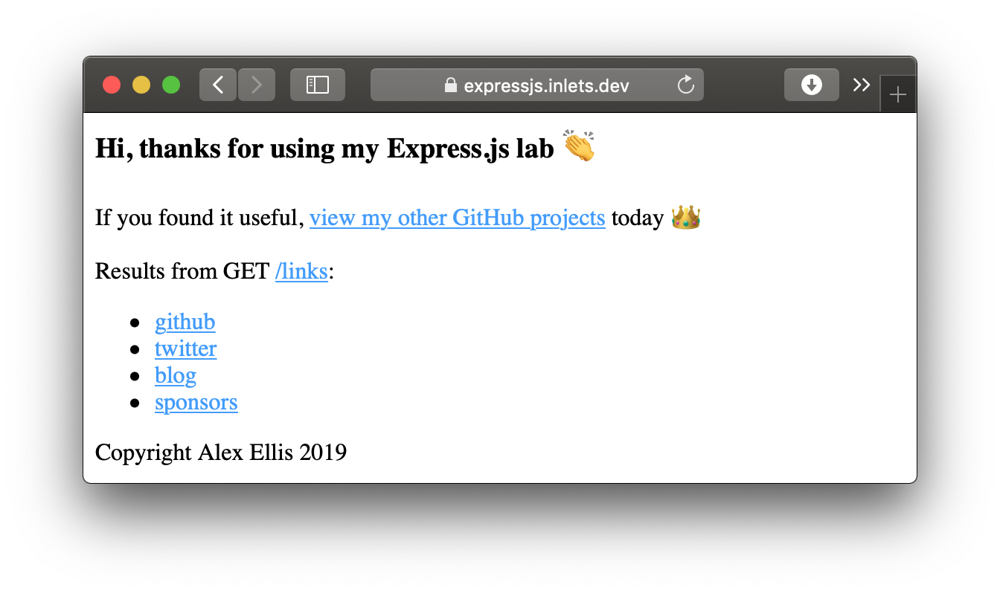
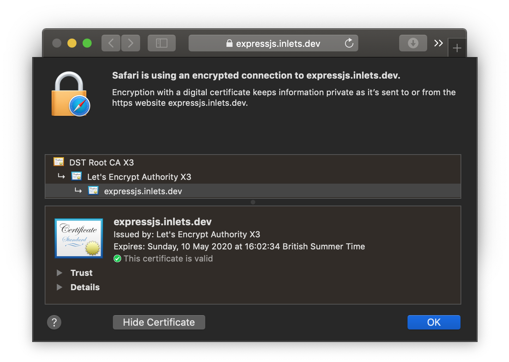

Tutorial: Expose a local IngressController with the inlets-operator¶
In this quick-start we will configure the inlets-operator to use inlets-pro (a TCP proxy) to expose NginxIngress so that it can receive HTTPS certificates via LetsEncrypt and cert-manager.
You can subscribe to inlets for personal or commercial use via Gumroad
If you don't have a license for inlets PRO, then your IngressController will only be able to serve plaintext HTTP over port 80 and you won't be able to obtain a TLS certificate.
Pre-reqs¶
- A computer or laptop running MacOS or Linux, or Git Bash or WSL on Windows
- Docker for Mac / Docker Daemon - installed in the normal way, you probably have this already
- KinD - the "darling" of the Kubernetes community is Kubernetes IN Docker, a small one-shot cluster that can run inside a Docker container
- arkade - arkade is an app installer that takes a helm chart and bundles it behind a simple CLI
Install arkade¶
You can use arkade or helm to install the various applications we are going to add to the cluster below. arkade provides an apps ecosystem that makes things much quicker.
MacOS and Linux users:
curl -sSLf https://dl.get-arkade.dev/ | sudo sh
Windows users should install Git Bash and run the above without `sudo.
Create a Kubernetes cluster with KinD¶
We're going to use KinD, which runs inside a container with Docker for Mac or the Docker daemon. MacOS cannot actually run containers or Kubernetes itself, so projects like Docker for Mac create a small Linux VM and hide it away.
You can use an alternative to KinD if you have a preferred tool.
Get a KinD binary release and kubectl (the Kubernetes CLI):
arkade get kind --version v0.9.0
arkade get kubectl --version v1.19.3
Now create a cluster:
$ kind create cluster
The initial creation could take a few minutes, but subsequent clusters creations are much faster.
Creating cluster "kind" ...
✓ Ensuring node image (kindest/node:v1.19.0) 🖼
✓ Preparing nodes 📦
✓ Writing configuration 📜
✓ Starting control-plane 🕹️
✓ Installing CNI 🔌
✓ Installing StorageClass 💾
Set kubectl context to "kind-kind"
You can now use your cluster with:
kubectl cluster-info --context kind-kind
Have a nice day! 👋
We can check that our single node is ready now:
kubectl get node -o wide
NAME STATUS ROLES AGE VERSION INTERNAL-IP EXTERNAL-IP OS-IMAGE KERNEL-VERSION CONTAINER-RUNTIME
kind-control-plane Ready master 35s v1.18.0 172.17.0.2 <none> Ubuntu 19.10 5.3.0-26-generic containerd://1.3.2
The above shows one node Ready, so we are ready to move on.
Install the inlets-operator¶
Save an access token for your cloud provider as $HOME/access-token, in this example we're using DigitalOcean.
Make sure you set LICENSE_FILE with the path to your license file, normally saved at: $HOME/.inlets/LICENSE.
export ACCESS_TOKEN=$HOME/access-token
export LICENSE_FILE="$HOME/LICENSE.txt"
arkade install inlets-operator \
--provider digitalocean \
--region lon1 \
--token-file $ACCESS_TOKEN \
--license-file "$LICENSE_FILE"
You can run
arkade install inlets-operator --helpto see a list of other cloud providers.
- Set the
--regionflag as required, it's best to have low latency between your current location and where the exit-servers will be provisioned. - Use your license in
--license, or omit this flag if you just want to serve port 80 from your IngressController without any TLS
Install nginx-ingress¶
This installs nginx-ingress using its Helm chart:
arkade install nginx-ingress
Install cert-manager¶
Install cert-manager, which can obtain TLS certificates through NginxIngress.
arkade install cert-manager
A quick review¶
Here's what we have so far:
-
nginx-ingress
An IngressController, Traefik or Caddy are also valid options. It comes with a Service of type LoadBalancer that will get a public address via the tunnel
-
inlets-operator configured to use inlets-pro
Provides us with a public VirtualIP for the IngressController service.
-
cert-manager
Provides TLS certificates through the HTTP01 or DNS01 challenges from LetsEncrypt
Deploy an application and get a TLS certificate¶
This is the final step that shows everything working end to end.
TLS certificates require a domain name and DNS A or CNAME entry, so let's set that up
Find the External-IP:
kubectl get svc
Now create a DNS A record in your admin panel, so for example: expressjs.example.com.
Now when you install a Kubernetes application with an Ingress definition, NginxIngress and cert-manager will work together to provide a TLS certificate.
Create a staging issuer for cert-manager staging-issuer.yaml and make sure you edit the email value.
export EMAIL="you@example.com"
cat > issuer-staging.yaml <<EOF
apiVersion: cert-manager.io/v1
kind: Issuer
metadata:
name: letsencrypt-staging
namespace: default
spec:
acme:
server: https://acme-staging-v02.api.letsencrypt.org/directory
email: $EMAIL
privateKeySecretRef:
name: letsencrypt-staging
solvers:
- selector: {}
http01:
ingress:
class: nginx
EOF
Apply the file with kubectl apply -f staging-issuer.yaml
While the Let's Encrypt production server has strict limits on the API, the staging server is more forgiving, and should be used while you are testing a deployment.
Edit email, then run: kubectl apply -f issuer.yaml.
Let's use helm3 to install Alex's example Node.js API available on GitHub
Create a custom.yaml file with the following:
ingress:
enabled: true
annotations:
kubernetes.io/ingress.class: nginx
cert-manager.io/issuer: "letsencrypt-staging"
hosts:
- host: expressjs.inlets.dev
paths: ["/"]
tls:
- secretName: expressjs-tls
hosts:
- expressjs.inlets.dev
Replace the string expressjs.inlets.dev with your own sub-domain created earlier i.e. expressjs.example.com.
If you are intending to deploy the chart to a Raspberry Pi, also update the image to an ARM version in the custom.yaml file:
image: alexellis2/service:0.3.6-armhf
You can download around a dozen other CLI tools using arkade including helm. Use arkade to download helm and put it in your PATH:
arkade get helm
# Put arkade in your path:
export PATH=$PATH:$HOME/.arkade/bin/helm3/
# Or alternatively install to /usr/local/bin
sudo cp $HOME/.arkade/bin/helm3/helm /usr/local/bin/
Now install the chart using helm:
helm repo add expressjs-k8s https://alexellis.github.io/expressjs-k8s/
# Then they run an update
helm repo update
# And finally they install
helm upgrade --install express expressjs-k8s/expressjs-k8s \
--values custom.yaml
Test it out¶
Now check the certificate has been created and visit the webpage in a browser:
kubectl get certificate
NAME READY SECRET AGE
expressjs-tls True expressjs-tls 49s
Open the webpage i.e. https://api.example.com. Since this is a staging certificate, you will get a warning from your browser. You can accept the certificate in order to test your site.
Getting a Production Certificate¶
Create a production certificate issuer issuer-prod.yaml, similar to the staging issuer you produced
earlier. Be sure to change the email address to your email.
export EMAIL="you@example.com"
cat > issuer-prod.yaml <<EOF
apiVersion: cert-manager.io/v1
kind: Issuer
metadata:
name: letsencrypt-prod
namespace: default
spec:
acme:
server: https://acme-v02.api.letsencrypt.org/directory
email: $EMAIL
privateKeySecretRef:
name: letsencrypt-prod
solvers:
- selector: {}
http01:
ingress:
class: nginx
EOF
Then run kubectl apply -f issuer-prod.yaml
Now you must update your expressjs deployment to use the new certificate issuer. Create a new
helm3 overrides file custom-prod.yaml:
cat > custom-prod.yaml <<EOF
ingress:
enabled: true
annotations:
kubernetes.io/ingress.class: nginx
cert-manager.io/issuer: "letsencrypt-prod"
hosts:
- host: expressjs.inlets.dev
paths: ["/"]
tls:
- secretName: expressjs-tls
hosts:
- expressjs.inlets.dev
EOF
Be sure to change the above domain name to your domain name for the sample server.
You can update your deployment using the helm command below:
helm upgrade express expressjs-k8s/expressjs-k8s --values custom-prod.yaml
Here's my example on my own domain:

You can view the certificate the certificate that's being served directly from your local cluster and see that it's valid:

Install a real-world application¶
Using arkade you can now install OpenFaaS or a Docker Registry with a couple of commands, and since you have Nginx and cert-manager in place, this will only take a few moments.
OpenFaaS with TLS¶
OpenFaaS is a platform for Kubernetes that provides FaaS functionality and microservices. The motto of the project is Serverless Functions Made Simple and you can deploy it along with TLS in just a couple of commands:
export DOMAIN=gateway.example.com
arkade install openfaas
arkade install openfaas-ingress \
--email webmaster@$DOMAIN \
--domain $DOMAIN
That's it, you'll now be able to access your gateway at https://$DOMAIN/
For more, see the OpenFaaS workshop
Docker Registry with TLS¶
A self-hosted Docker Registry with TLS and private authentication can be hard to set up, but we can now do that with two commands.
export DOMAIN=registry.example.com
arkade install docker-registry
arkade install docker-registry-ingress \
--email webmaster@$DOMAIN \
--domain $DOMAIN
Now try your registry:
docker login $DOMAIN
docker pull alpine:3.11
docker tag alpine:3.11 $DOMAIN/alpine:3.11
docker push $DOMAIN/alpine:3.11
You can even combine the new private registry with OpenFaaS if you like, checkout the docs for more.
Wrapping up¶
Through the use of inlets-pro we have an encrypted control-plane for the websocket tunnel, and encryption for the traffic going to our Express.js app using a TLS certificate from LetsEncrypt.
You can now get a green lock and a valid TLS certificate for your local cluster, which also means that this will work with bare-metal Kubernetes, on-premises and with your Raspberry Pi cluster.
Note if you're just looking for something to use in development, without TLS or encryption, you can install the inlets-operator without the
--licenseflag and port 80 will be exposed for you instead. You can still use NginxIngress, but you won't get a certificate and it won't be encrypted e2e.